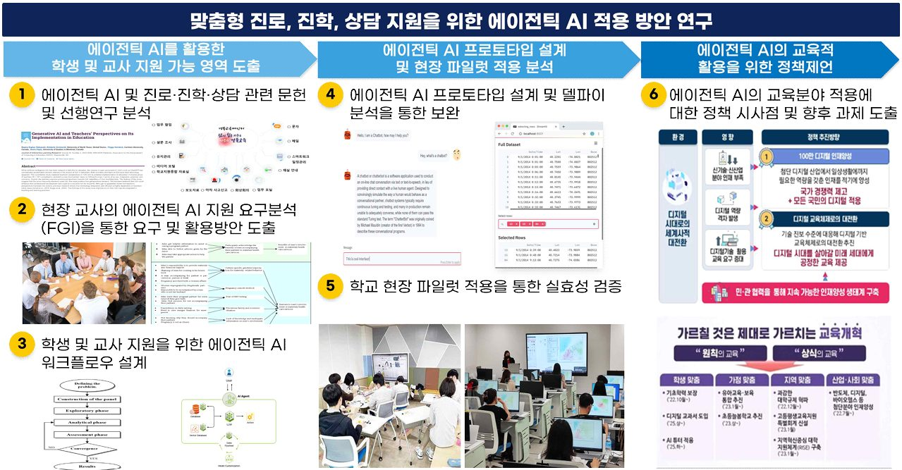

[Completed] A Study on the Application of Agentic AI for Personalized Career, College Admission, and Counseling Support
맞춤형 진로, 진학 상담 지원을 위한 에이전틱 AI 적용 방안 연구
Principal Investigator / 2025.06.01 ~ 2025.12.31 / Korea Education and Research Information Service (KERIS) (KRW 50 million)
Funding: Korea Education and Research Information Service (KERIS) (KRW 50 million)
Period: 2025.06. ~ 2025.12.
This research aims to develop and validate application strategies of Agentic AI—an autonomous, adaptive, and goal-oriented AI system—to provide personalized career exploration, college admission guidance, and counseling support in response to the full-scale implementation of Korea's High School Credit System. The study ① analyzes domestic and international literature and use cases of Agentic AI in education, ② derives core functional requirements through Focus Group Interviews (FGI) with in-service teachers, ③ designs a Multi-Agent Collaboration prototype consisting of a main agent and student/teacher sub-agents (integrating planning, tool use, and reflection mechanisms via the LangChain framework), validated through expert Delphi analysis, ④ conducts pilot implementation in 5–10 general high schools (30+ teachers, 100+ students) to empirically verify usability, counseling efficiency, and educational effectiveness using NASA-TLX, SUS, and task-based evaluation metrics, and ⑤ derives policy implications addressing institutional, social, and user-centered considerations including data privacy, algorithmic fairness, and Explainable AI (XAI). The outcomes provide foundational evidence for AI-based career guidance policy, supporting students' self-directed career design and reducing teachers' counseling workload.
맞춤형 진로, 진학, 상담 지원을 위한 에이전틱 AI 적용 방안 연구 (A Study on the Application of Agentic AI for Personalized Career, College Admission, and Counseling Support)
본 연구는 고교학점제 전면 시행에 따라 증가하는 학생의 진로·진학 탐색 부담과 교사의 상담·교육과정 운영 부담을 경감하기 위해, 자율성·적응성·목표지향성을 갖춘 에이전틱 AI(Agentic AI)를 활용한 맞춤형 진로·진학·상담 지원 방안을 도출하고자 합니다. 이를 위해 ① 국내외 교육분야 에이전틱 AI 선행연구 및 활용 사례 분석, ② 현장 교사 대상 FGI를 통한 핵심 기능 요소 도출, ③ 메인 에이전트와 학생용·교사용 보조 에이전트로 구성된 다중 에이전트 협업(Multi-Agent Collaboration) 구조 기반 프로토타입 설계 및 전문가 델파이 검증, ④ 일반계 고등학교 5~10개교(교사 30명, 학생 100명 이상) 대상 파일럿 적용을 통한 실효성 검증, ⑤ 제도적·사회적·사용자 관점의 정책 과제 도출을 수행합니다. 본 연구는 학생의 자기주도적 진로 설계 역량 함양과 교사의 상담 업무 효율화를 동시에 지원하는 AI 기반 진로지도 정책 수립의 실증적 기초자료를 제공합니다.
